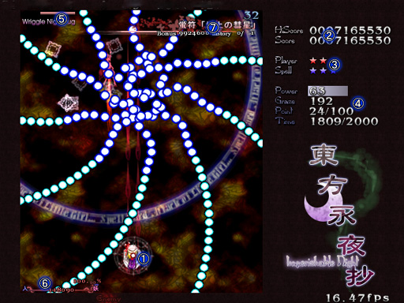

人妖弹幕幻夜
东方永夜抄 ～ Imperishable Night．
■画面说明

１．自机
２．最高得分 … 现在的角色，武器，于该难度下的最高分记录
得分 … 游戏中的得分
３．玩家的残机和残余Bomb数
４．火力 … 表示为Max时代表火力已增加至最大（最大为128）
擦敌弹数
得分道具取得数/下一次残机奖厉的要求数目
刻符取得数/刻符取得数Norma
５．正中间的槽，Boss（中Boss）的残余体力
左边的槽，Boss（中Boss）体力槽的残余条数
右边的数字，距离Boss（中Boss）自爆的剩余时间
６．上方的%表示，妖率
中央的数字，得分道具的最高得分
７．Spell Card的名字，奖励分，取得次数/遭遇次数
回到主页
程序本体，图片文件，曲子的数据，以及说明书等全部的著作权归制作者ZUN所有。
未经许可禁止复制，转载，发布。
2004 (C)opyright ZUN. All rights reserved.